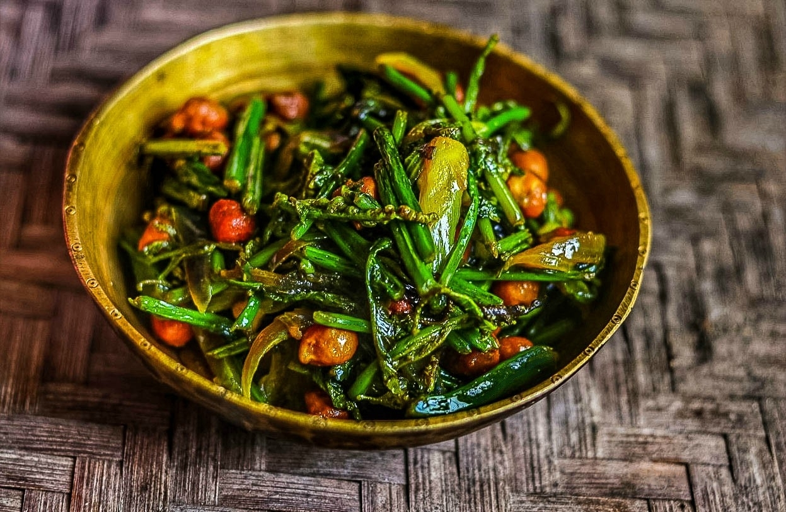

Fiddlehead fern fry is a great way to enjoy the nutritional benefits of this seasonal vegetable.
This is one of the most common dish, normally served in Assamese household regularly. The Fiddlehead ferns or Dhekia grows in wild after rains. A bunch of these beautiful greens stir fried with baby potatoes or chickpeas are something that you will never forget after eating because it is so tasty. It goes well with rice and yellow daal.
Ingredients
- Fiddelhead fern, chopped
- 2 tsp oil
- 1 onion, sliced
- 1 tsp ginger garlic paste
- 1/2 cup soaked chickpeas
- 1/2 tsp turmeric powder
- 1 tsp cumin seeds
- 2 tsp lemon juice
- Salt
- 2 or 3 Green chillies
Recipe Instructions
- Heat oil in a pan, add green chilli, cumin seeds, sliced onion, ginger garlic paste and saute till golden brown.
- Add soaked chickpeas, turmeric powder and saute for a minute.
- Add the chopped fiddelhead fern, salt and stir for 5 minutes.
- Now cover and cook for another 5-7 minutes.
- Finally, add lemon juice and stir.
- Serve with rice.
Return to the top
Return to the main page